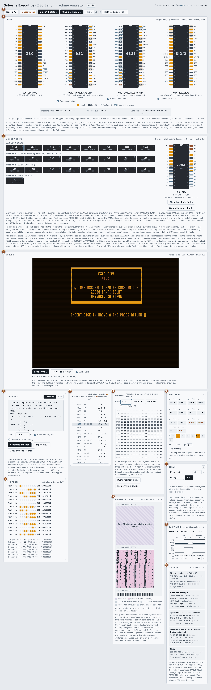
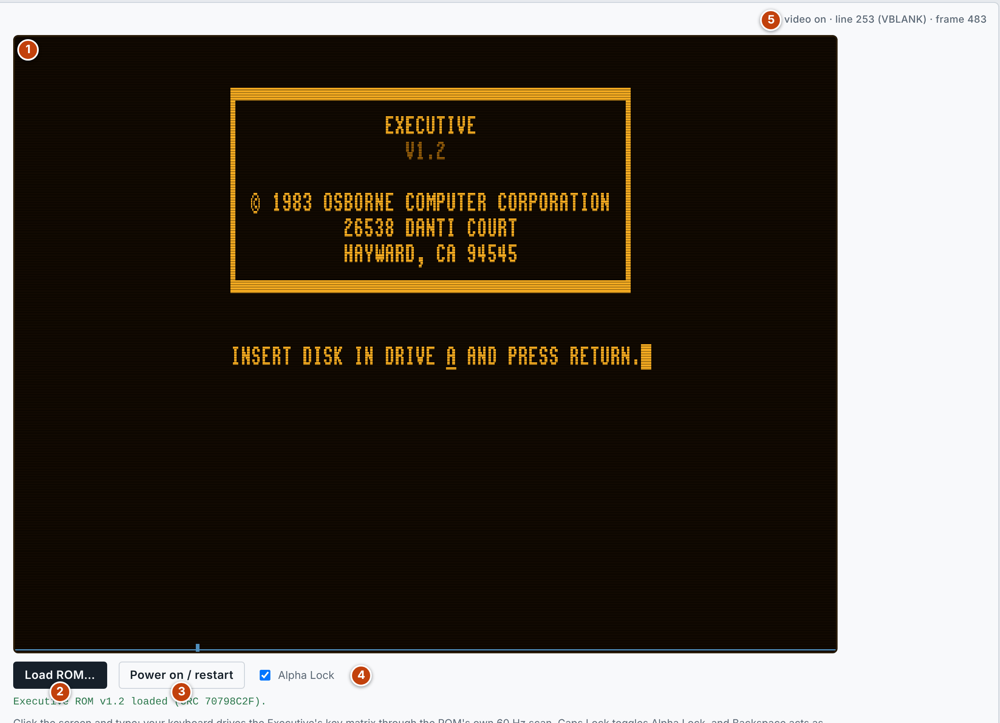
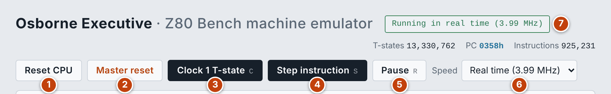
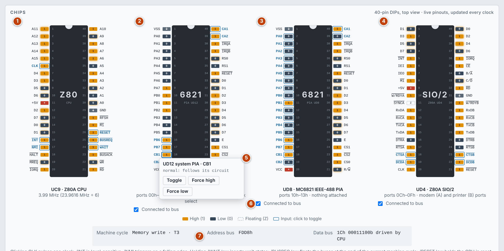
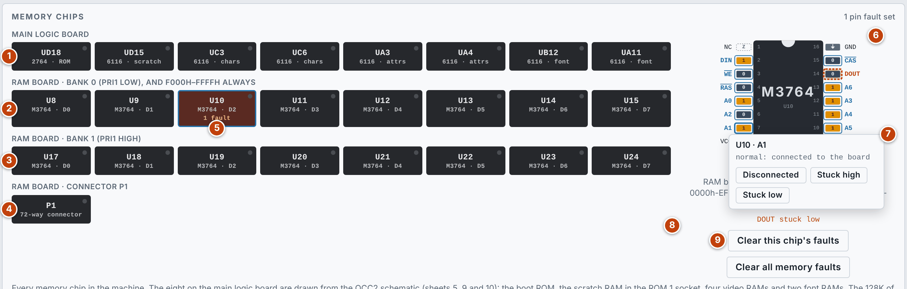
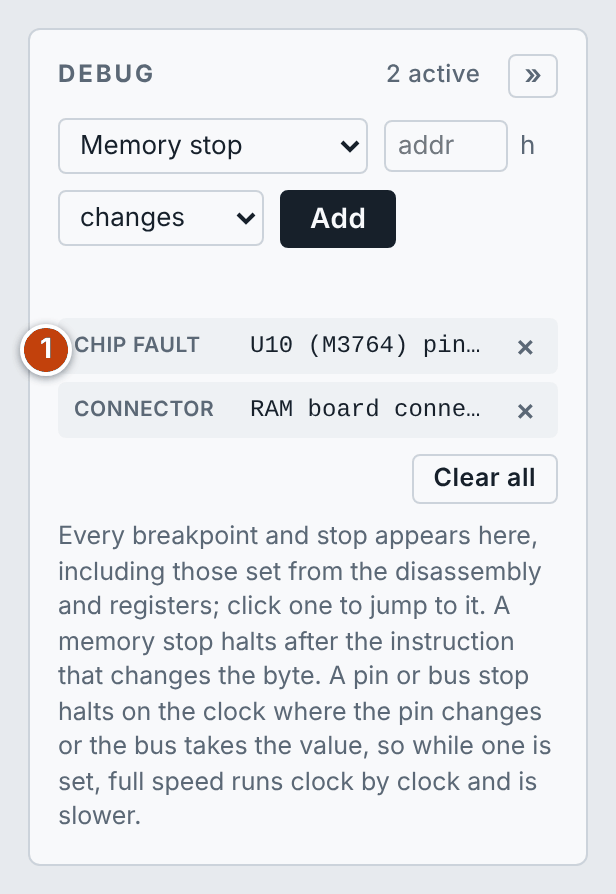
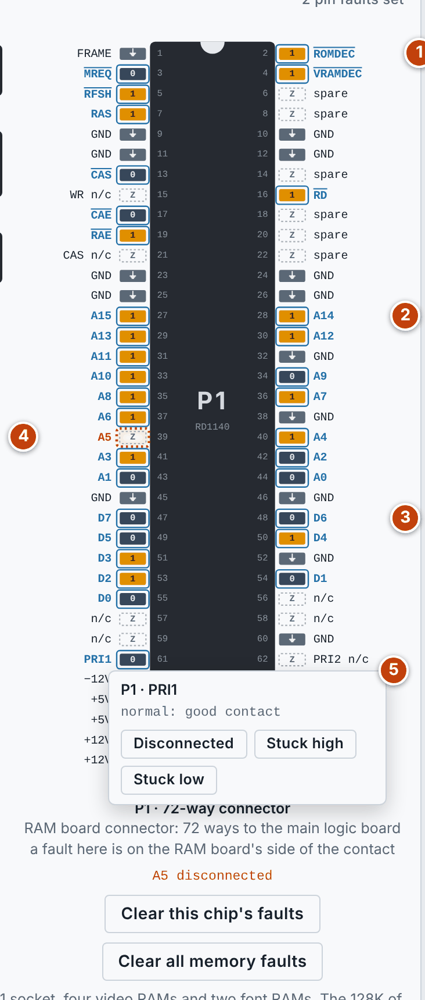
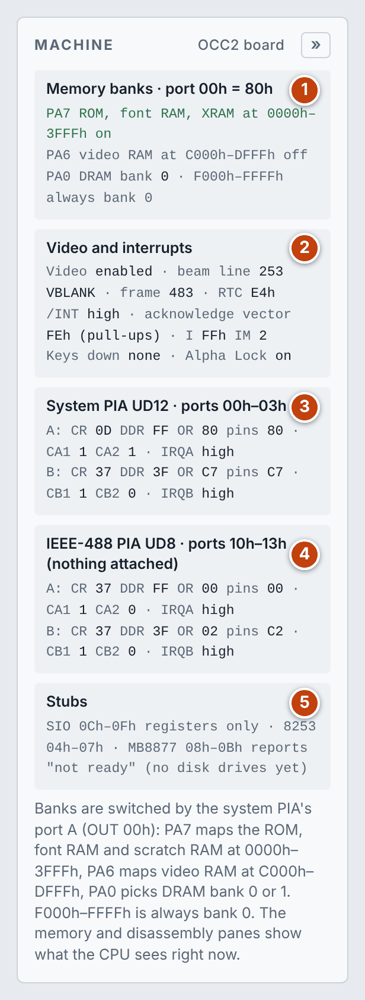
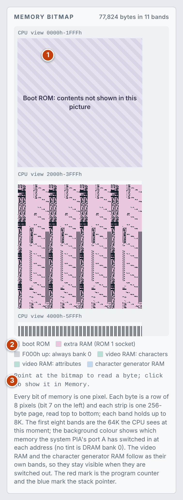

> HELP "OSBEXEC"
Osborne Executive documentation
How to use the emulator, and how the machine it models is put together. The numbers in each list match the numbered markers on the screenshot above it.
User guide
The emulator is Z80 Bench with an Osborne Executive built around the CPU. Everything Z80 Bench does still works here; this guide covers what the machine adds, and points to the Z80 Bench documentation for the shared debugging tools.
Quick start
- Press Load ROM… under the screen and choose your own 8 KB Executive ROM image (version 1.2, CRC
70798C2F). The ROM is copyrighted and is not included. Your browser keeps it, so you only load it once. - The machine powers on and runs in real time. The ROM tests the hardware, loads its character set and shows its sign-on screen.
- Click the screen and type: your keyboard drives the Executive's key matrix.
- Press Pause (or R) to stop the machine, then step it one instruction (S) or one clock (C) at a time and watch every chip's pins.
The floppy disk controller is not emulated yet, so the ROM stops at "insert disk in drive A": the machine cannot boot CP/M.
The screen

- Toolbar: reset, clock, step and run controls.
- Chips: live pinouts of the Z80A, the two PIAs and the SIO.
- Memory chips: every memory chip in the machine, with live pins and fault simulation.
- Screen: the Executive's display, the ROM loader and the keyboard.
- Program: the assembler and hex loader.
- I/O ports: the last value written to each port, and a log of port reads and writes.
- Disassembly: what the CPU sees, as instructions.
- Memory: what the CPU sees, in hex.
- Memory bitmap: all the memory as a picture, tinted by what is switched in.
- Registers
- Debug: breakpoints, stops, forced pins and faults.
- Bus timing
- Machine: the state of the bank switching, video, interrupts and PIAs.
The ROM, the display and the keyboard

- Display: 80 columns by 24 rows in amber, drawn from the character set the ROM loads into the font RAM, with half intensity, underline, blink, reverse video and the graphics characters. Click it to give it the keyboard. While you step, a blue marker shows where the electron beam is.
- Load ROM…: choose the ROM image. The message under the buttons confirms the version and CRC.
- Power on / restart: resets the machine and runs it in real time.
- Alpha Lock: the Executive's caps lock key. Caps Lock on your keyboard toggles it too.
- Video state: whether video is on, and the scan line and frame being drawn.
Your keys go through the ROM's own keyboard scan, 60 times a second, so typing behaves as on the real machine. Backspace acts as the ← key.
Running and stepping

- Reset CPU: pulses the reset line: the CPU restarts at
0000hand the PIAs are reset, which switches the ROM back in. - Master reset: also forgets the ROM (load it again to switch on) and clears memory, breakpoints, stops, forced pins and faults. It asks for a second click.
- Clock 1 T-state (C): one clock period.
- Step instruction (S): one instruction.
- Run / Pause (R)
- Speed: Real time (3.99 MHz) runs at the Executive's own speed with 60 Hz video. Full speed runs as fast as your computer allows. The slow clock rates (5 Hz to 10 kHz) let you watch the pins change.
- Status: what the machine is doing, or what halted it.
Chips

The four large chips are drawn with every pin live, wired as on the OCC2 schematic. Amber is high, dark is low and a dashed outline is floating.
- UC9, Z80A CPU: the same pinout as in Z80 Bench. Click CLK, /INT, /NMI, /WAIT, /BUSREQ or /RESET to drive it.
- UD12, MC6821 system PIA (ports
00h–03h): port A drives the bank select lines, CB1 receives VBLANK, and the chip also handles the speaker and disk select. - UD8, MC6821 IEEE-488 PIA (ports
10h–13h): nothing is attached to it. - UD4, Z80A SIO/2 (ports
0Ch–0Fh): the modem (A) and printer (B) serial ports. - Pin menu: click a highlighted input pin to toggle it, force it high or low, or release it. A forced pin ignores whatever drives it and is shown with a dashed red ring.
- Connected to bus: untick it to pull a chip off the CPU bus. Its reads return
FFh, writes to it are ignored and its interrupt no longer reaches /INT. - Bus readout: the machine cycle, the address bus and the data bus for the current clock.
Forced pins and disconnected chips are listed in the Debug pane, where you can release them.
Memory chips and fault simulation

- Main logic board: the boot ROM, the scratch RAM, four video RAMs and two font RAMs.
- RAM board, bank 0: U8–U15, one chip for each data bit D0–D7. These chips also hold
F000h–FFFFhfor both banks. - RAM board, bank 1: U17–U24, laid out as on the board.
- RAM board connector P1: the 72-way connector between the RAM board and the main logic board, which can be faulted in the same way. See below.
- Selected chip: click a tile to see that chip. A tile's dot lights while its chip is being accessed, and a tile with a fault turns red and shows the count.
- Pinout: the selected chip's pins, which follow the bus on every clock. The video and font RAMs also show the display circuit's own reads between CPU accesses.
- Pin menu: click a pin and choose Disconnected, Stuck high or Stuck low.
- Faults on this chip
- Clear this chip's faults and Clear all memory faults
The machine then runs with the fault, and the memory view and the disassembly show what the CPU reads through it:
| Pin | Fault | Effect |
|---|---|---|
| Address | Any | The chip uses the wrong cell. A disconnected input floats high |
| Data | Any | That bit reads as the forced level, and is stored as it |
| Chip enable (RAS or CAS on a dynamic RAM) | Stuck high or disconnected | The chip is out of circuit: reads float to 1s and writes are lost |
| Chip enable | Stuck low | The chip drives the data bus on every memory read and fights the chip that should answer; the bus carries the AND of the two |
| Output enable | Stuck high or disconnected | The chip never drives the bus |
| Write enable | Stuck high or disconnected | Writes are lost |
| Write enable | Stuck low | Every access becomes a write |

- Debug pane: memory chip and connector faults are listed with the breakpoints and stops. Remove one with its ×, or everything with Clear all or Master reset.
The RAM board connector

P1 carries every signal between the main logic board and the RAM board. It is drawn with its odd pins down the left and its even pins down the right, and each pin shows its live level.
- Control signals: the decodes, strobes and enables the main board sends. An overline marks a signal that is active when low.
- Address pins: A0–A15.
- Data pins: D0–D7.
- A faulted pin: shown with a red ring, dashed when disconnected.
- Pin menu: click a signal pin and choose Disconnected, Stuck high or Stuck low. Power, ground, spare and unused pins cannot be faulted.
A fault here is a bad contact seen from the RAM board: the board gets a floating input, which reads as high, or a level held high or low, while the rest of the machine still sees the true signal.
| Pin | Effect of a fault |
|---|---|
| A0–A15 | Every access goes to the wrong cell in all sixteen RAMs at once. A12–A15 also feed the board's F000h decoder |
| D0–D7 | That bit reads and is stored as the forced level, in both banks |
| PRI1 | The bank is fixed. Disconnected, bank 1 answers everywhere below F000h |
| ROMDEC*, VRAMDEC* | High or disconnected: the board no longer stands aside, so it answers at the same time as the ROM or the video RAM; reads carry the AND of the two and writes go to both. Low: the board never answers |
| RAS, CAS* | Any fault stops the strobe, so no cell is read or written. Without RAS the RAMs are not refreshed either |
| RD* | The board makes write enable from RD*. High or disconnected: every access becomes a write, so cells are overwritten with 1s. Low: writes are lost |
| RAE* | High or disconnected: the row address floats to FFh. Low: the column becomes the AND of the two address bytes. Either way writes are lost |
| CAE* | High or disconnected: the column address floats to FFh. Low: the row becomes the AND of the two address bytes |
| RFSH* | High or disconnected: a refresh cycle only reaches the row of chips its address happens to select, so the bank that is not in use is not refreshed. Low: row address bit 7 is replaced by the board's refresh bit, and half the cells can no longer be reached |
| MREQ* | No effect: it only clocks a refresh bit the board does not use |
Rows of RAM that go without refresh lose their data after about two seconds of machine time and then read as FFh. A real chip holds its data for a different and irregular time; the figure is a stand-in.
Machine panel

- Memory banks: the value on the system PIA's port A and what it has switched in.
- Video and interrupts: whether video is enabled, the beam line and frame, the RTC counter, the /INT line, the vector an interrupt acknowledge would read, and the keys held down.
- System PIA UD12: for each half, the control register (CR), data direction register (DDR), output register (OR), the levels on the pins, the control lines and the interrupt output.
- IEEE-488 PIA UD8: the same for the second PIA.
- Stubs: the devices that are present only so that the ROM can run.
Memory bitmap

- Bands: the first eight bands are the 64K the CPU sees at this moment, one pixel per bit. The video RAM and the character generator RAM follow as their own bands, so they stay visible when they are switched out. The red mark is the program counter and the blue mark the stack pointer.
- Tints: the background colour shows which memory port A has switched in at each address. No tint is DRAM bank 0.
- Readout: point at the bitmap to read a byte; click to show it in the Memory panel.
The debugging tools
The remaining panels are Z80 Bench's own and work the same way here. The Memory and Disassembly panels show what the CPU sees through the current bank switching.
- Loading a program: you can assemble your own code into the Executive's memory
- Disassembly and breakpoints
- Memory
- Registers and register stops
- Debug pane: memory, pin and bus stops
- Bus timing
Hardware reference
The model follows the OCC2 main logic board schematic (1K00035 rev 10) and the Osborne Executive Technical Manual. The RAM board was traced from a real board.
The machine
| Part | Details |
|---|---|
| CPU | Z80A (UC9) at 3.9936 MHz: the 23.9616 MHz crystal divided by 6 |
| RAM | 128K of dynamic RAM in two 64K banks, on a separate RAM board |
| ROM | 8K boot ROM (a 2764), switched out once the system is loaded |
| Display | 80 × 24 characters, with a character set held in RAM |
| Parallel I/O | Two MC6821 PIAs: UD12 for the system, UD8 for the IEEE-488 port |
| Serial I/O | Z80A SIO/2 (UD4), clocked by an 8253 timer |
| Disks | MB8877 floppy disk controller |
Memory map and banking
Port A of the system PIA (written with OUT 00h) switches memory. After reset the PIA's lines are inputs and the bank lines float high, so the machine starts with the ROM switched in.
| Port A bit | When high |
|---|---|
| PA7 | The ROM, the font RAM and the scratch RAM replace the DRAM at 0000h–3FFFh |
| PA6 | The video RAM replaces the DRAM at C000h–DFFFh |
| PA0 | DRAM bank 1 is selected; low selects bank 0 |
| Address | With PA7 or PA6 high | Otherwise |
|---|---|---|
| 0000h–1FFFh | Reads: boot ROM. Writes: font RAM (4K, repeated) | DRAM, bank 0 or 1 |
| 2000h–3FFFh | Scratch RAM (2K, repeated) | DRAM, bank 0 or 1 |
| 4000h–BFFFh | DRAM, bank 0 or 1 | |
| C000h–CFFFh | Video RAM: characters | DRAM, bank 0 or 1 |
| D000h–DFFFh | Video RAM: attributes (upper four bits) | DRAM, bank 0 or 1 |
| E000h–EFFFh | DRAM, bank 0 or 1 | |
| F000h–FFFFh | Always DRAM bank 0 | |
Reading a character from the video RAM also loads its attribute into a latch, and writing a character stores the latched attribute beside it.
I/O ports
A 74LS138 decodes address lines A2–A4 when A7 is low. A5 and A6 are not decoded, so each group repeats through 00h–7Fh.
| Ports | Device | In the emulator |
|---|---|---|
| 00h–03h | System PIA UD12 (register select on A0, A1) | Emulated |
| 04h–07h | 8253 timer (baud rates) | Stub: reads return FFh |
| 08h–0Bh | MB8877 floppy disk controller | Stub: reports not ready |
| 0Ch–0Fh | Z80A SIO/2 UD4 (A0 selects data or control, A1 channel A or B) | Registers only: no data moves |
| 10h–13h | IEEE-488 PIA UD8 | Emulated, with nothing attached |
| 14h–17h | Keyboard (read) | Emulated |
| 18h–1Bh | RTC counter (read) | Emulated |
| 1Ch–1Fh | Video enable (write) | Emulated |
Video
- Text: 80 columns by 24 rows. Each row of the video RAM is 128 bytes long, of which the first 80 are shown.
- Character cell: 8 dots wide and 10 scan lines high. The shapes come from the font RAM, 16 bytes per character, which the ROM fills at power on.
- Raster: 260 lines per frame (the last 20 are vertical blanking) and 256 CPU T-states per line, which gives 60 frames a second.
- Video enable: the display stays blank after reset until the ROM writes to port
1Ch.
| Bit | Meaning |
|---|---|
| Attribute D7 | Full intensity (half intensity when low) |
| Attribute D6 | Underline |
| Attribute D5 | Blink |
| Attribute D4 | Second character set (the graphics characters) |
| Character D7 | Reverse video, in the first character set |
Keyboard
The keyboard is an 8 × 8 matrix read with IN A,(14h). The upper half of the address bus (A8–A15) selects the rows, one bit per row, and a pressed key reads as a 0 in its column.
| Row | D7 | D6 | D5 | D4 | D3 | D2 | D1 | D0 |
|---|---|---|---|---|---|---|---|---|
| A8 | [ | ' | Return | Shift | Ctrl | Tab | Esc | |
| A9 | 8 | 7 | 6 | 5 | 4 | 3 | 2 | 1 |
| A10 | I | U | Y | T | R | E | W | Q |
| A11 | K | J | H | G | F | D | S | A |
| A12 | , | M | N | B | V | C | X | Z |
| A13 | 9 | O | P | . | Space | 0 | ← | ↑ |
| A14 | = | L | \ | ; | / | - | ↓ | → |
| A15 | Alpha Lock |
Interrupts and timing
- Sources: the two PIAs and the SIO share the /INT line. The CPU runs in interrupt mode 2.
- Vector: the SIO supplies its own vector. For the PIAs nothing drives the bus during the acknowledge, so the pull-ups give
FEh. - VBLANK: vertical blanking goes to CB1 of the system PIA, which raises the 60 Hz interrupt the ROM uses to scan the keyboard.
- RTC counter: a 74LS393 counts vertical blanking periods; the ROM reads it at port
18h. It also times the blink.
Memory chips
| Position | Chip | Use |
|---|---|---|
| UD18 | 2764 | Boot ROM (ROM 0), 0000h–1FFFh |
| UD15 | 6116 | Scratch RAM, fitted in the ROM 1 socket |
| UC3, UC6 | 6116 | Video RAM, characters: C000h–C7FFh and C800h–CFFFh |
| UA3, UA4 | 6116 | Video RAM, attributes: D000h–D7FFh and D800h–DFFFh |
| UB12, UA11 | 6116 | Font RAM, first and second character sets |
| U8–U15 | OKI M3764 (4164 type) | RAM board: D0–D7 of bank 0, and of F000h–FFFFh always |
| U17–U24 | OKI M3764 | RAM board: D0–D7 of bank 1 |
The RAM board
The 128K of dynamic RAM is on a separate board (RD1140) that the main board schematic does not show. Its circuit was reverse engineered from a real board by continuity measurement.
- Bank select: PA0 of the system PIA (the board's PRI1 line) chooses which row of eight chips gets RAS and CAS.
- Top 4K: a 74LS20 detects A15–A12 all high and keeps
F000h–FFFFhin U8–U15 whatever the bank. - ROM and video accesses: neither row gets CAS while the ROM or the video RAM is answering.
- Addresses: two 74LS244 buffers put the low address byte on the RAM address pins as the row, then the high byte as the column.
- Write enable: a flip-flop samples RD* as the row address ends; its inverted output is write enable, so it goes low early in any cycle that is not a read. WR* is not used.
- Connector: P1 has 72 ways. The emulator can fault each signal pin.
The RAM address pins are not wired in straight order, which matters when you follow a stuck address pin:
| RAM pin | A0 | A1 | A2 | A3 | A4 | A5 | A6 | A7 |
|---|---|---|---|---|---|---|---|---|
| Row (CPU line) | A0 | A2 | A1 | A5 | A4 | A3 | A6 | A7 |
| Column (CPU line) | A8 | A10 | A9 | A13 | A12 | A11 | A14 | A15 |
What is not emulated
- Floppy disks: the MB8877 always reports not ready, so the machine cannot boot from disk.
- 8253 timer: not emulated, so the SIO's transmit and receive clocks stay idle and no serial data moves.
- IEEE-488 port: the PIA is there, with nothing attached.
- Speaker